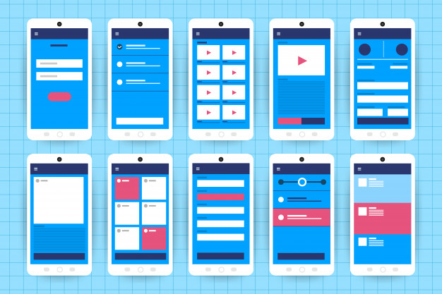

GiftIt
Overview and Motivation
“I forgot,” is probably one of the costliest comments when it comes to your friends and family. Whether you forgot their birthday, anniversary or even Mother’s/Father’s Day, it can lead to many awkward moments in life. Oftentimes we can become so involved with our day-to-day activities, that we may not have enough time or energy to organise a gift every year and for so many people.GiftIt acts like your personal assistant and enables you to connect with others, get to know a bit more about their preferences, keep track of key events such as their birthday and store purchases that you may have made for them.
Set up
When you first download the GiftIt app, you must sign in with an email address, create a profile and add your interests/hobbies. You can also choose to create categories such as friends, family and colleagues and allocate your peers into each of them.Features of GiftIt:
Profile: This is where the user will be able to see the details that they entered when they registered for the app such as their name, email address and their interests.Categories: When you first register, you will be able to add categories or create some of your own to make it easier for you to locate your peers.
Search and add: This feature allows you to send friend requests and add your peers into your categories. Accepting a request will enable you to communicate with other users using the chat feature.
History: This is where you can find a full record of everything that you have purchased. The user will have to manually add in their purchases so that they can keep records for each person. Users can also input the status of the gift(has only been purchased or has it been purchased and given to the recipient).
Chat feature: This feature will allow you to create group chats which will have options to track the contribution of each member while splitting an amount between members. This feature will be particularly useful when organising events for your chosen recipient.
Totals: This feature can be used by users to make note of how much they have spent on a gift, who the recipient is and the date of the purchase. This will ensure that the user is aware of what has been gifted and what hasn't.
A sample run-through of the app:
Scenario: Let’s say that you would like to buy a birthday gift for your friend Jennifer.
From the main menu, you would select the category “Friends,” which would take you to a page with all the people in this category and from there you would select Jennifer. Under her name, there will be descriptions relating to her interests, hobbies and key events, which will guide you in coming up with a gift.
To store the purchase of a gift, you must select the plus icon, which will be placed on the same page. Here you can insert the name of the gift, its price, date purchased and its status (has it been given to her or is it yet to be given).
Each time you update your purchases on the app, you will be able to see these in the history section of the app. This will ensure that you can keep track of all your transactions.
Tools and Technologies:
The main programming languages that are required to make this app include python, C++, swift and JavaScript. Additionally, open-source tools that can be applied include BuildFirejs, Framework 7 and Ionic, which support app development for both windows and IOS.
Since the app comes with a chat feature, platforms such as Firebase (a Backend-as-a-service platform) can help to build this feature. This platform will be able to host and monitor this feature of the application and make it run in an efficient manner.
While constructing the app, it is a good idea to perform research related to User Experience (UX) to better understand the needs of users. Prototypes will need to be made and tested in order to make amendments as per feedback during the development phase.
Skills required:
This app has many features and will require a team in order to build it. As there are many people in the IT industry with a wide range of skills, building this app could be a great opportunity to share and consolidate their capabilities. Members of this team must have sufficient knowledge and skills related to programming in languages such as python, C++, swift, JavaScript or other suitable languages. Knowledge in User Interface design is also necessary as it will determine the overall look and feel of the app and will determine if users can easily navigate and use different features.
How we plan on creating our prototype:
We plan on creating our prototype using websites such as figma and balsamiq. Using these websites, we aim on clearly indicating the different screens that our app will have as well as including all the individual features such as profile and chat. In terms of the overall design, we will be including icons which are intuitive and are easy to identify for users, a navigation bar to assist the completion of tasks, side navigation bars and an overall simple layout.
